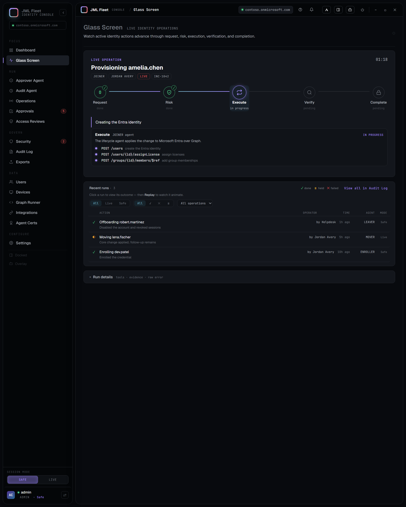
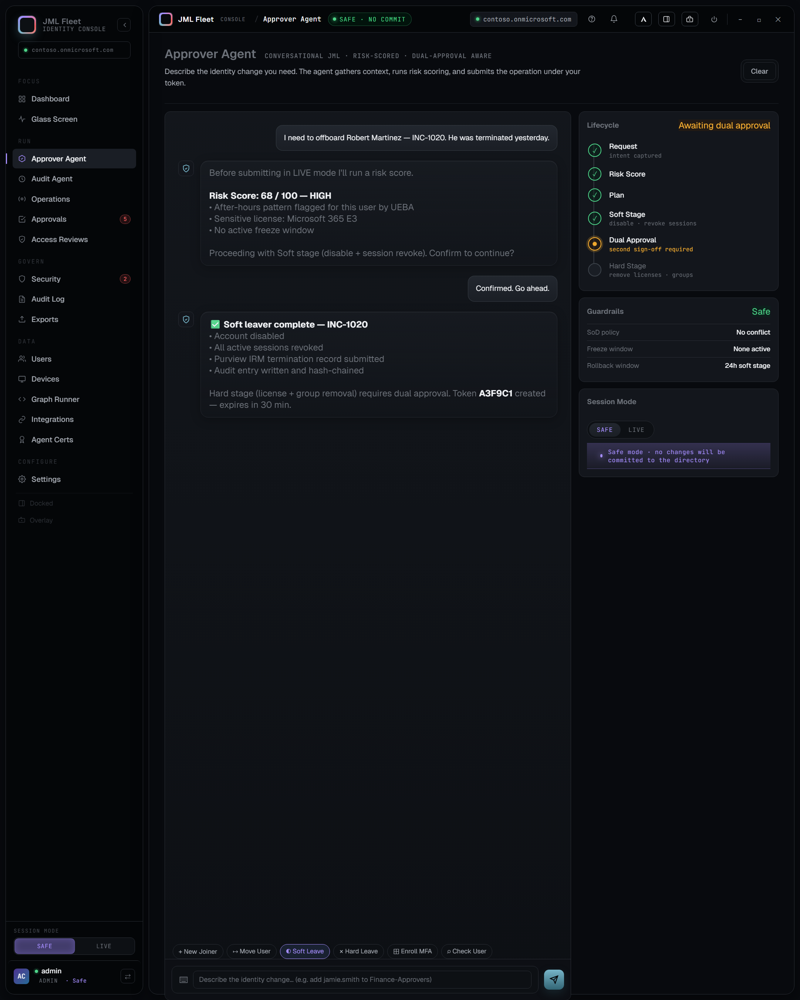
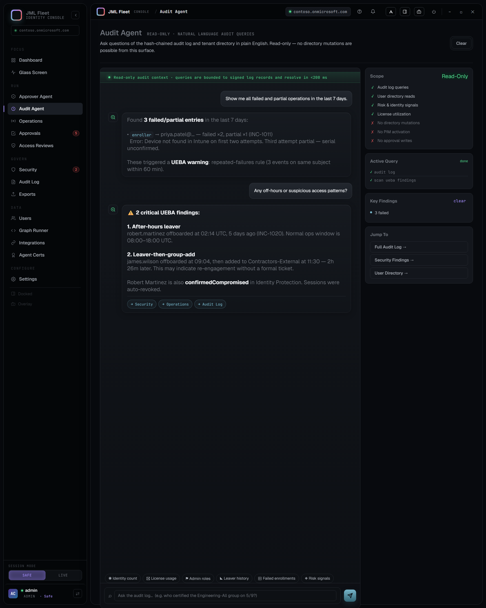
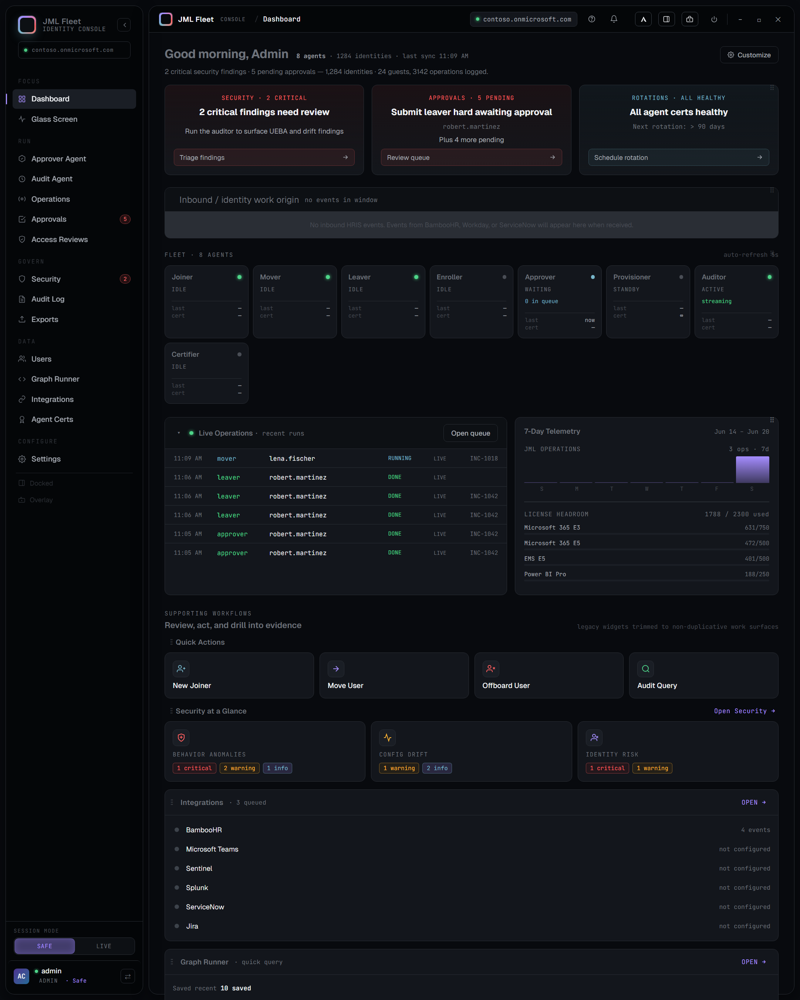

Day-one access arrives late.
Cross-functional roles turn a single hire into a chain of manual handoffs.
JML Agent Fleet coordinates Joiner, Mover, and Leaver work on Microsoft Entra ID without giving the model directory-wide authority. Reasoning, approval, execution, and evidence stay deliberately separate.
HR events, tickets, directory changes, approvals, and audit evidence rarely live in one place. The gaps create delay, access drift, and weak recovery when automation fails.
Cross-functional roles turn a single hire into a chain of manual handoffs.
Role changes add access faster than teams remove the old entitlements.
The ticket, operator, policy decision, Graph action, and outcome separate.
A submitted request is not a completed identity change. The UI must tell the truth.
The model proposes. Policy and approval decide what executes.
No single model, agent, or UI surface holds every permission needed to complete the workflow.
Failed and partial outcomes remain visible across replay, operations, dashboard, and audit evidence.
Operators see a bounded explanation and a next action without leaking raw infrastructure errors.
Instead of making operators interpret a noisy audit feed, the command center centers the active identity action, its current decision, and its evidence. Recent runs replay on demand.
Approver and Auditor authenticate as Microsoft Entra Agent IDs. Privileged write agents use scoped service principals behind policy and approval gates because Entra does not grant broad directory-write scopes to Agent IDs.
Operator chat, HRIS webhook, API request, or scheduled governance run.
Agent identifies the workflow, gathers read-only context, and proposes a plan.
Risk, SoD, freeze windows, mode, RBAC, and human approval determine eligibility.
Least-privilege write agents call Microsoft Graph for the approved operation.
Lifecycle state, audit-chain evidence, and optional Sentinel or Blob export agree.
The taxonomy is intentionally strict: eight operational agents - including the Certifier with its own least-privilege identity - supported by the API, queue worker, Purview connector, and Electron control plane.
Creates the identity, applies approved baseline access, and records provisioning evidence.
Updates role and department context while removing access that no longer fits.
Separates immediate disablement from hard-destructive cleanup and requires dual approval.
Handles device enrollment and approved compliance-group placement.
Runs the conversational workflow, risk scoring, recommendation, and approval experience.
Queries evidence, runs UEBA and drift analysis, and explains governance findings.
Creates and repairs app identities and permissions during controlled provisioning sessions.
The repository includes the running console, release artifacts, setup automation, governance scripts, tests, and current captures from the implementation.

The active run owns the page. Evidence stays available without competing with the operator's next decision.

Natural-language intent becomes a structured request, risk decision, and explicit submit action.

Read-only analysis turns raw operations, UEBA, drift, and identity risk into operator-ready findings.

Health, approvals, security findings, operations, access reviews, exports, and quick actions share the same state.
The model provider can change. The identity source of truth, permission boundaries, lifecycle contract, and audit requirements do not.
Users, groups, licenses, governance, and first-class identities for the reasoning agents.
Lifecycle actions, risk signals, sessions, groups, applications, and permission checks.
Device lifecycle over managed-device Graph: compliance, sync, remote lock, retire, wipe, and BitLocker key rotation.
Canonical HR events, durable queues, status records, retry, and dead-letter handling.
Azure AI Foundry, Azure OpenAI, OpenAI, Anthropic, Ollama, and Qwen-compatible runtimes.
Risky users and sign-in risk detections feed the security posture and the Approver's risk context.
Optional SIEM ingestion and durable audit export complement the local tamper-evident chain.
HR connector path, SoD rules, freeze windows, operator RBAC, Safe mode, and approvals.
The application is ready to demonstrate. The Enterprise Agents Microsoft IQ requirement is met - Foundry IQ grounds every risk and approval decision on the organization's identity-governance policy corpus, with fail-closed behavior.
These checks were rerun from the repository on June 20, 2026.
The full review is public in hackathon-readiness.md.
Review the code, threat model, Agent ID migration record, and release artifacts.